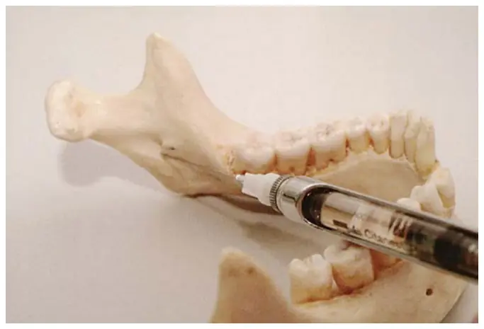

نسخه استخراجشده؛ ترجمه یا تأیید علمی انجام نشده است. وضعیت: captured
قدم 1 · theory
جمعبندی IANB روی یونیت
IANB را مثل یک چکلیست کوتاه به خاطر بسپار:

جای سوزن و سرنگ را در IANB ببین؛ بدنهی سرنگ از روی پرمولرهای طرف مقابل میآید. (Malamed. Handbook of Local Anesthesia, 7th ed. — Fig. 14.6)
سوزن بلند گیج ۲۵؛ بیمار خوابیده به پشت و دهان کاملاً باز.
انگشت در ناچ کورونوئید؛ ارتفاع ۶ تا ۱۰ میلیمتر بالای سطح اکلوزال، تا عمیقترین نقطهی پتریگومندیبولار رافه.
ورود در سه چهارم این فاصله؛ بدنهی سرنگ روی پرمولرهای طرف مقابل.
برخورد با استخوان در ۲۰ تا ۲۵ میلیمتر، ۱ میلیمتر عقب، آسپیراسیون در دو صفحه.
۱٫۵ میلیلیتر در دستکم ۶۰ ثانیه؛ هنگام خروج ۰٫۲ میلیلیتر برای عصب لینگوال.
علائم بافت نرم در ۳ تا ۵ دقیقه؛ بعد لب پایین و تست پالپ. پیش از قضاوت دربارهی شکست، ۱۰ تا ۱۵ دقیقه صبر.
چند نکتهی تکمیلی
کودک: عمق تا استخوان حدود ۱۵ میلیمتر است و در کودک کوچک سوزن کوتاه گیج ۲۵ یا ۲۷ کافی است. چون سوراخ مندیبولار پایینتر است، موفقیت IANB در کودک همکار معمولاً بیش از ۹۰٪ است.
بلاک باکال را فقط وقتی بزن که روی بافت نرم باکال مولرها کار داری؛ تزریق روتین آن پس از هر IANB توجیهی ندارد.
IANB دوطرفه بلع را ناممکن نمیکند، ولی بیمار چنین حس میکند و حرف زدن و مراقبت از لب و زبان برایش سخت میشود.
نشانهی خطر را جدی بگیر: استخوان لمس نشد یعنی دارو نریز؛ خون قرمز روشن در کارپول یعنی کارپول را عوض کن و از نو شروع کن.
قدم 2 · question
در IANB باید بول را همیشه رو به استخوان بچرخانی، وگرنه بیحسی نمینشیند.
۰۱
صحیح
۰۲
غلط
قدم 3 · question
تزریق روتین بلاک باکال پس از هر IANB، حتی وقتی روی لثهی باکال مولرها کاری نداری، توصیه میشود.
۰۱
صحیح
۰۲
غلط
قدم 4 · question
برای ترمیم شش دندان قدامی پایین، از کانین تا کانین، کدام برنامهی بیحسی مناسبتر است؟
۰۱
IANB یک سمت و بلاک اینسیزیو سمت دیگر
۰۲
IANB در هر دو سمت، پشت سر هم در همان جلسه
۰۳
بلاک باکال در هر دو سمت، در ناحیهی مولرها
۰۴
IANB دوطرفه همراه بلاک باکال در هر دو سمت
قدم 5 · question
پس از IANB، زبان و لب پایین بیحساند. هنگام جرمگیری زیر لثه، سطح باکال مولر اول درد دارد ولی سطح لینگوال آن نه. کدام اقدام درست است؟
۰۱
بلاک عصب منتال در سمت همان مولر و جلوی سوراخ
۰۲
تکرار IANB در نقطهای ۵ تا ۱۰ میلیمتر بالاتر از قبل
۰۳
اینفیلتراسیون لینگوال در کنار همان مولر
۰۴
بلاک عصب باکال برای بافت نرم باکال مولرها
قدم 6 · question
دانشجویی پس از لمس استخوان در IANB، بیآنکه سوزن را عقب بکشد، آسپیره و تزریق میکند. بیمار هنگام تزریق از درد شدید شکایت دارد. خطای او کدام است؟
۰۱
بیحسی سطحی را کمتر از ۱۰ دقیقه گذاشته و مخاط حس داشته است
۰۲
سوزن را زیادی عقب کشیده و دارو در عضلهی پتریگوئید داخلی رفته است
۰۳
آسپیراسیون را در یک صفحه انجام داده و دارو وارد رگ شده است
۰۴
سوزن را ۱ میلیمتر عقب نکشیده و دارو زیر پریوست رفته است
قدم 7 · question
پس از IANB، بیمار جز محل ورود سوزن هیچجا بیحسی ندارد. سوزن در حدود ۸ میلیمتر به استخوان خورده بود. در تزریق دوباره چه میکنی؟
۰۱
همان مسیر را تکرار میکنم و این بار حجم دارو را به دو کارپول کامل میرسانم
۰۲
بدنهی سرنگ را روی مولرهای همان سمت میبرم تا سوزن کاملاً موازی راموس شود
۰۳
بدنهی سرنگ را به جلوی دهان، روی کانین یا لترال طرف مقابل، میبرم
۰۴
نقطهی ورود را ۱۰ میلیمتر پایینتر از سطح اکلوزال انتخاب میکنم
قدم 8 · question
در بیشتر بیماران، دارویی که برای عصب آلوئولار تحتانی ریخته میشود به عصب لینگوال هم میرسد و آن را بیحس میکند.
۰۱
صحیح
۰۲
غلط
قدم 9 · question
هرچه سوزن باریکتر (گیج بزرگتر) باشد، آسپیراسیون با آن قابل اعتمادتر است.
۰۱
صحیح
۰۲
غلط
قدم 10 · question
بیماری با فلج گذرای عصب صورتی پس از IANB از مطب میرود و نمیخواهد پد چشمی بگذارد. چه توصیهای میکنی؟
۰۱
قطرهی بیحسی چشمی بریزد تا ناراحتی چشم را حس نکند
۰۲
چشم را باز نگه دارد تا حرکت پلک زودتر برگردد
۰۳
پلک را گاهبهگاه با دست ببندد تا قرنیه خشک نشود
۰۴
لنز تماسی بگذارد تا از سطح قرنیه محافظت شود
قدم 11 · question
هنگام پیش بردن سوزن در IANB، بیمار ناگهان از حسی مثل برقگرفتگی در زبان میگوید. این یافته چه معنایی دارد؟
۰۱
دارو زیر پریوست رفته است و استخوان راموس را تحریک کرده است
۰۲
سوزن وارد شریان آلوئولار تحتانی شده و دارو درون رگ رفته است
۰۳
نوک سوزن در غدهی پاروتید است و عصب صورتی را تحریک کرده است
۰۴
سوزن به یک عصب، بهاحتمال زیاد عصب لینگوال، خورده است
قدم 12 · question
کدام بیمار برای IANB احتیاط بیشتری میخواهد؟
۰۱
کودک خردسالی که احتمال دارد پس از درمان لب و زبانش را گاز بگیرد
۰۲
بزرگسال سالمی که برای ترمیم چند مولر در یک سمت فک پایین مراجعه کرده است
۰۳
نوجوانی که قرار است روی لثهی لینگوال پرمولرهایش کار شود
۰۴
بیماری که پیشتر چند بار IANB موفق و بیعارضه گرفته است
قدم 13 · question
دانشجویی کل ۱٫۵ میلیلیتر IANB را در حدود ۱۵ ثانیه و با یک آسپیراسیون تزریق میکند. کدام نقد درست است؟
۰۱
زمان درست است، ولی باید پیش از تزریق بیحسی سطحی را دستکم ۱۰ دقیقه بگذارد
۰۲
کارش درست است؛ تزریق سریع مدت ماندن سوزن در بافت و احتمال آسیب عصب را کم میکند
۰۳
تند است؛ باید در دستکم ۶۰ ثانیه و با آسپیراسیون میانی ریخته شود
۰۴
زمان درست است، ولی حجم باید دو کارپول کامل باشد تا بیحسی مطمئنتر شود
قدم 14 · question
پسر ۸ سالهی همکاری برای پالپوتومی مولر شیری دوم پایین آمده است. دانشجو میخواهد مثل بزرگسال، سوزن بلند را ۶ تا ۱۰ میلیمتر بالای سطح اکلوزال وارد کند و تا ۲۰ تا ۲۵ میلیمتر جلو ببرد. کدام نقد درست است؟
۰۱
ارتفاع درست است، ولی عمق باید بیش از ۲۵ میلیمتر باشد چون راموس کودک ضخیمتر است
۰۲
در کودک سوراخ مندیبولار بالاتر و عمق بیشتر است؛ باید بالاتر و عمیقتر از بزرگسال تزریق کرد تا به عصب برسی
۰۳
ارتفاع و عمق درست است؛ فقط باید سوزن گیج ۳۰ برداشت تا تزریق کمدردتر شود
۰۴
در کودک سوراخ مندیبولار پایینتر و عمق تا استخوان حدود ۱۵ میلیمتر است؛ نیازی به این ارتفاع و عمق نیست